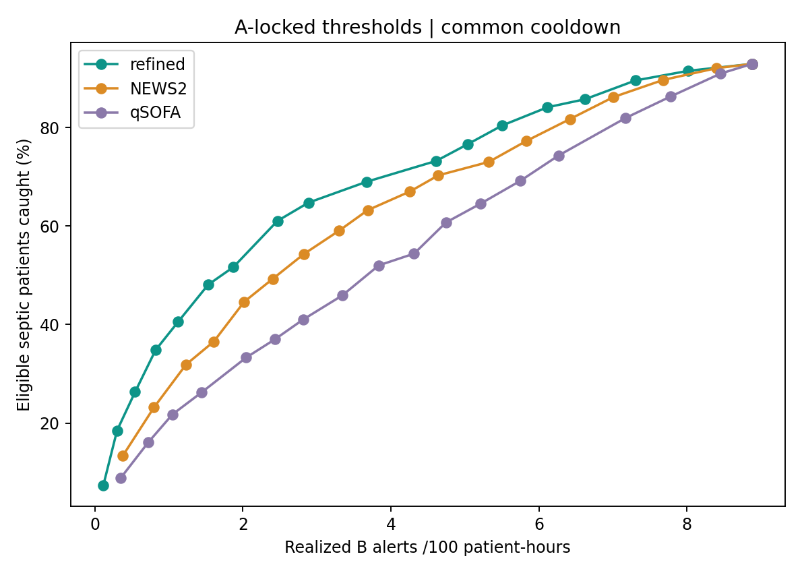

SepsisLens
Explainable sepsis early warning, tested on a hospital it never trained on · DSH Hacks V2 · AI x Healthcare
Research prototype. Not a medical device. Not for clinical use. Retrospective, de-identified public ICU data; no diagnosis, triage or live monitoring.
Problem
Sepsis kills fast, and earlier treatment helps, but bedside early-warning scores either miss cases or fire so often that staff tune them out. A useful tool must warn earlier at a realistic alarm burden and show why it alerted.
Approach
- Data: PhysioNet/CinC Challenge 2019 (CC BY 4.0). Train, calibrate and fix alarm thresholds on Hospital A only; test on Hospital B (20,000 patients, 761,995 patient-hours, 919 septic patients eligible for onset-based scoring).
- Model: LightGBM on causal hourly features (current and past data only), with SHAP explanations.
- Alarm policy: a threshold per alarm budget plus a 12-hour cooldown (an alert silences repeats). Baselines get the same policy: NEWS2-style and qSOFA-style scores (partial approximations).
- Catch = at least one alert in the 12 hours before inferred onset. Onset = first SepsisLabel=1 hour + 6 (inferred).
Results on Hospital B (budget 5 alerts/100 h, 12 h cooldown)
| SepsisLens | NEWS2-style |
|---|
| Septic patients caught | 69.0% (634/919) | 67.0% (616/919) |
| 95% interval | 65.9–71.7% | 63.9–70.0% |
| Outside-window alarms | 27,340 | 31,841 |
| Realized alerts / 100 h | 3.67 | 4.26 |
| Median warning | 7 h | 6 h |
| Hourly AUROC | 0.726 | 0.643 |
| Caught at 2 alerts/100 h | 34.8% | 36.6% |
About 14% fewer outside-window alarms. The 5/100 h figure is the target fit on Hospital A; realized Hospital B rates are shown. Source: reports/metrics.json.

Catch rate vs realized Hospital B alerts per 100 patient-hours (A-locked thresholds, shared cooldown). Source: reports/figures/alarm_budget.png.
Explainability
Every alert has a per-feature SHAP breakdown of the tree's log-odds, plus an hour-by-hour patient replay showing only what was known at that hour. In the demo case the model alerts at hour 169, 12 h before inferred onset and 10 h before the NEWS2-style alert at hour 179; the top drivers are oxygen support (FiO2), a rising respiratory rate and BUN. SHAP shows model contributions, not causes.
Honest limits
- Small, uncertain gain: the catch gap (+2.0 pp) is within noise (paired bootstrap 95% interval about −1.6 to +5.6 pp). The clearer benefit is fewer alarms per catch.
- At 2 alerts/100 h NEWS2 catches slightly more (36.6% vs 34.8%), but fires about twice as many alarms (1.61 vs 0.82 per 100 h).
- Part of the gain comes from the cooldown policy; the featured patient is a best case (in the 25-patient replay sample the model is earlier than NEWS2-style in 5 of 13 shared catches). Unlike the 2019 challenge we compare alarm burden against NEWS2 across hospitals; we make no claim to beat challenge entries.
- Retrospective data; Hospital B had been evaluated before this refinement, so it is an external check, not a pristine holdout. “False alarm” = alert outside the useful window, not an adjudicated clinical error. NEWS2/qSOFA are partial approximations. Not a medical device.
Live demo: [DEMO_URL — add after deploying] · Code: [REPO_URL — add after pushing to GitHub]